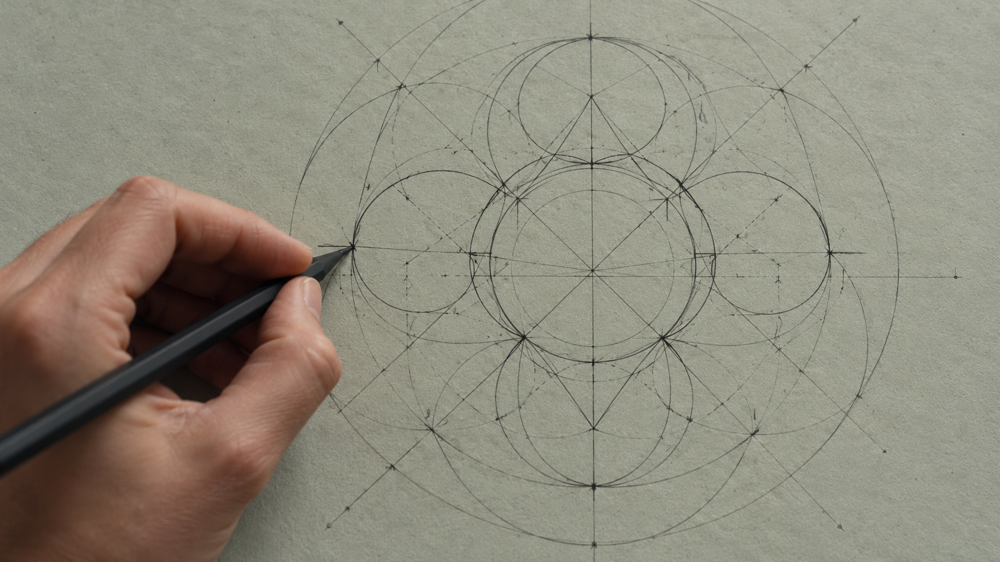

昨晚 23:00 · 月之暗面K KIMI
2.8TTOTAL PARAMETERS

Meet the open weights.
国产 AI，又放大招
WHAT'S RELEASED
开源了什么
三项基础设施同步开源
THE SCALE
规模有多大
MoE 架构原生多模态混合注意力
- TOTAL PARAMETERS总参数
- 2.8T
- ACTIVE PARAMETERS激活参数
- 104B
- CONTEXT TOKENS上下文
- 1.04M
- SCALING EFFICIENCY效率 vs K2
- 2.5×
CODING BENCHMARKS
Coding 多榜，登顶
SWE-BENCH VERIFIED 真实仓库修 bug
LEADKIMI K374.2
GPT-5.6 SOL73.1
LIVECODEBENCH V6 算法编程
LEADKIMI K382.6
FABLE 580.4
TERMINAL-BENCH 终端任务
CLOSEKIMI K358.9
OPUS-4.859.7
CODING · OVERALL
开源模型，进入新阶段
#MODELSCORE
- 1Kimi K3OPENTOP
- 2GPT-5.6 SolCLOSED
- 3Fable 5CLOSED
- 4Opus-4.8CLOSED
- 5GLM-5.2OPEN
RELATIVE ILLUSTRATION · OFFICIAL NUMBERS PREVAIL
K•KIMI
Open weights. Open report.
你觉得 Kimi K3 能改变什么？
原片视觉学习样例 · 数据未独立核验 · 自制静态照片替代原实拍
暂停于首屏完整构图